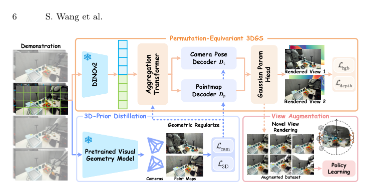
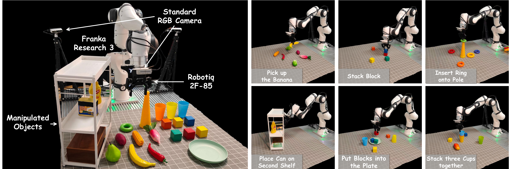
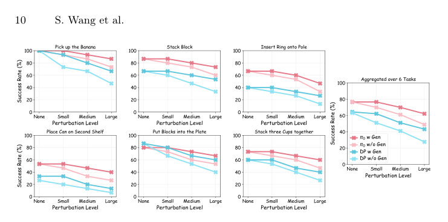
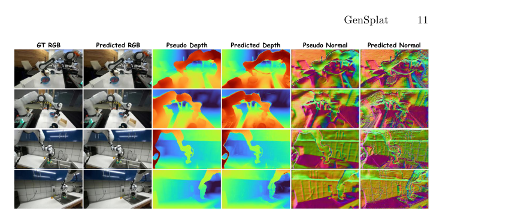
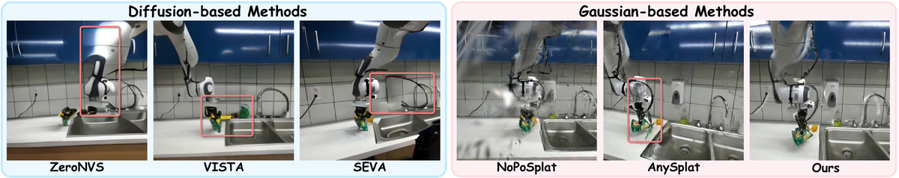
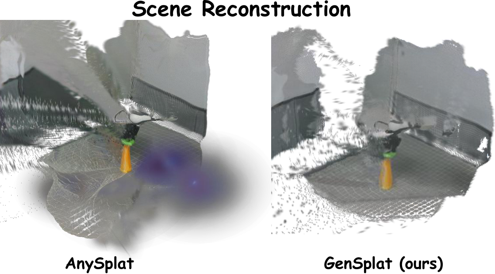
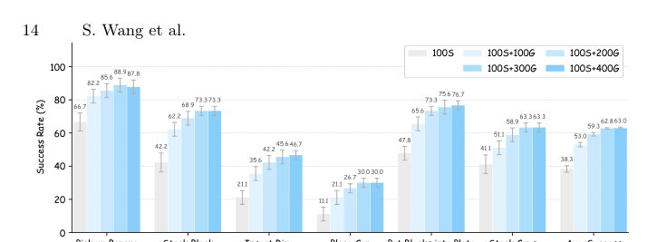

Efficient
简单摘要
流行的以 2D 为中心的视觉运动策略在新颖的视图泛化方面表现出明显的缺陷，因为它们对静态观察的依赖阻碍了在看不见的视图中一致的动作映射。作者的主线做法是：作为回应，我们引入了 GenSplat，一种前馈 3D 高斯 Splatting 框架，可通过新颖的视图渲染促进视图广义策略学习。
更关键的是，GenSplat 采用排列等变架构，在单次前向传递中从稀疏、未校准的输入重建高保真 3D 场景。从结果上看，为了确保结构完整性，我们设计了一种 3D 优先蒸馏策略，可规范 3DGS 优化，防止纯光度监控典型的几何崩溃。


虽然大规模模仿学习的最新进展在嵌入式人工智能领域展现了巨大的前景，但其功效仍然严格取决于广泛、多样化的数据集。作者的主线做法是：这种数据依赖性暴露了流行的观察到行动范式中的一个基本漏洞。
更关键的是，为了解决这个问题，之前的努力利用新颖的视图合成（NVS）来人为地扩展相机姿势的多样性，大致分为两种范式。从结果上看，相比之下，基于高斯的方法使用各向异性高斯基元参数化显式 3D 场景。
核心创新
这篇工作的创新不是简单堆模块，而是把问题重新定义为：流行的以 2D 为中心的视觉运动策略在新颖的视图泛化方面表现出明显的缺陷，因为它们对静态观察的依赖阻碍了在看不见的视图中一致的动作映射。
第二个关键新意在于：作为回应，我们引入了 GenSplat，一种前馈 3D 高斯 Splatting 框架，可通过新颖的视图渲染促进视图广义策略学习。这使方法不只是能生成结果，更能解释为什么会有效。
再往后看，前馈 3D 高斯分布 3D 先行蒸馏视图泛化策略学习 我们详细介绍了 GenSplat，一个前馈 3D 高斯分布 (3DGS) 框架，旨在通过稀疏、非校准的新颖视图合成来扩展观测流形。这也是它和纯工程拼装方案拉开差距的地方。
技术细节
方法主线可以概括为：通过在没有严格相机校准的情况下重建度量一致的 3D 工作空间，GenSplat 密集了训练数据的连续空间支持，本质上为下游策略引入了视图广义动作映射。
其中最关键的一环是：为此，我们构建了一个每帧、无姿态的相机增强管道，表示为。这样设计直接带来的作用是：给定时间步长的相机视图，通过一组高斯基元表示 3D 场景，预测每个视图的相机参数，并根据采样的目标相机姿势渲染图像。
从训练和推理角度看，作者还特别处理了：得到的增强数据集是，用替换每个原始帧，其中 是从定期采样的相机变换渲染的新颖视图。
$$ \begin{cases} (\boldsymbol{P}_i, \boldsymbol{C}_i) = D_{\text{p}}(\boldsymbol{h}_i),\; \boldsymbol{\mu}_g = \text{trans}(\boldsymbol{P}_i, \boldsymbol{p}_i), \\ (\sigma_g, \boldsymbol{r}_g, \boldsymbol{s}_g, \boldsymbol{c}_g) = H_\text{G}(F_{\text{DPT}}(\boldsymbol{h}_i) + F_{\text{RGB}}(I_i)). \end{cases} $$
这组公式用于定义模型中的变量关系和训练目标。建议先看左侧要预测的对象，再看右侧每一项如何约束优化方向。
$$ \mathcal{L}_{\text{3D}} = \frac{1}{HW} \sum_{u,v} \left\| \hat{\boldsymbol{P}}(u,v) - \boldsymbol{P}(u,v) \right\|_2^2, $$
该公式用于定义核心计算关系。阅读时先看左侧目标量，再看右侧由 L、u、v、P 等变量构成的约束和聚合方式。
$$ \mathcal{L}_{\text{cam}} \!=\! \sum_{i \neq j} \Big( \ell_{\text{rot}}(\boldsymbol{\hat{R}}_{i\leftarrow j}, \boldsymbol{R}_{i\leftarrow j}) + \mathcal{H}_{\delta}(\boldsymbol{\hat{T}}_{i\leftarrow j} - \boldsymbol{T}_{i\leftarrow j})\Big). $$
该公式用于定义核心计算关系。阅读时先看左侧目标量，再看右侧由 L、i、j、R 等变量构成的约束和聚合方式。
$$ \mathcal{L}_{\text{3D-prior}} = \lambda_{\text{3D}} \mathcal{L}_{\text{3D}} + \lambda_{\text{cam}} \mathcal{L}_{\text{cam}}. $$
该公式用于定义核心计算关系。阅读时先看左侧目标量，再看右侧由 L、L、L 等变量构成的约束和聚合方式。
$$ \max_{\theta}\sum_{(\boldsymbol{o},\,\boldsymbol{a}) \in \mathcal{D}_{\text{train}}} \log \pi_{\theta}(\boldsymbol{a}\mid \boldsymbol{o}), $$
这组公式用于定义模型中的变量关系和训练目标。建议先看左侧要预测的对象，再看右侧每一项如何约束优化方向。
$$ \mathcal{L} = \mathcal{L}_{\text{rgb}} + \lambda_{\text{depth}} \mathcal{L}_{\text{depth}} + \mathcal{L}_{\text{3D-prior}}. $$
该公式用于定义核心计算关系。阅读时先看左侧目标量，再看右侧由 L、L、L、L 等变量构成的约束和聚合方式。
$$ \mathcal{L}_{\text{rgb}} = \lambda_{\text{1}}\| I - \hat{I} \|_1 + \lambda_{\text{2}} \, \mathtt{LPIPS}(I,\hat{I}), $$
该公式用于定义核心计算关系。阅读时先看左侧目标量，再看右侧由 L、I、I、I 等变量构成的约束和聚合方式。
$$ \mathcal{L}_{\text{depth}} = \frac{1}{\lVert M \rVert_{1}} \left\lVert\, M \odot \big( \boldsymbol{P}_{。,\;2} - \hat{D} \big) \,\right\rVert_{2}^{2}, $$
该公式用于定义核心计算关系。阅读时先看左侧目标量，再看右侧由 L、M、M、P 等变量构成的约束和聚合方式。




实验结论
实验主要围绕一个核心问题展开：我们在现实世界的机器人平台上进行了广泛的实验，以评估我们提出的方法 GenSplat 的性能。
从主要对比结果看，enumerate[label=RQ:, leftmargin=*] 通过 GenSplat 扩展观测流形如何有效地提高策略对分布外相机扰动的鲁棒性？。定性结果和消融实验进一步说明：GenSplat 在渲染质量、策略学习和效率方面与基于扩散和基于高斯的 NVS 方法相比如何？。


理解评价
从整篇论文看，它的真正贡献是：作为回应，我们引入了 GenSplat，一种前馈 3D 高斯 Splatting 框架，可通过新颖的视图渲染促进视图广义策略学习，而不是单纯把扩散模型继续微调。作者把问题落在“分布外驾驶场景如何稳定生成”这个更关键的缺口上。
它最有说服力的地方在于：得到的增强数据集是，用替换每个原始帧，其中 是从定期采样的相机变换渲染的新颖视图。这说明论文的方法链路——3D 点云编辑、车辆补全、再到 RL 后训练——是前后闭合的，而不是各模块各自堆叠。
主要局限在于：当前方案仍受算力和时长限制，更适合离线生成而非实时闭环模拟。如果继续往前推进，一个自然方向是把更长时序、更低成本训练和更广泛的 OOD 场景覆盖一起纳入统一评估。
以下相关论文可作为延伸阅读：